Información
En esta página veremos un pequeño catalogo de anime y manga que te puede interesar
En esta página veremos un pequeño catalogo de anime y manga que te puede interesar
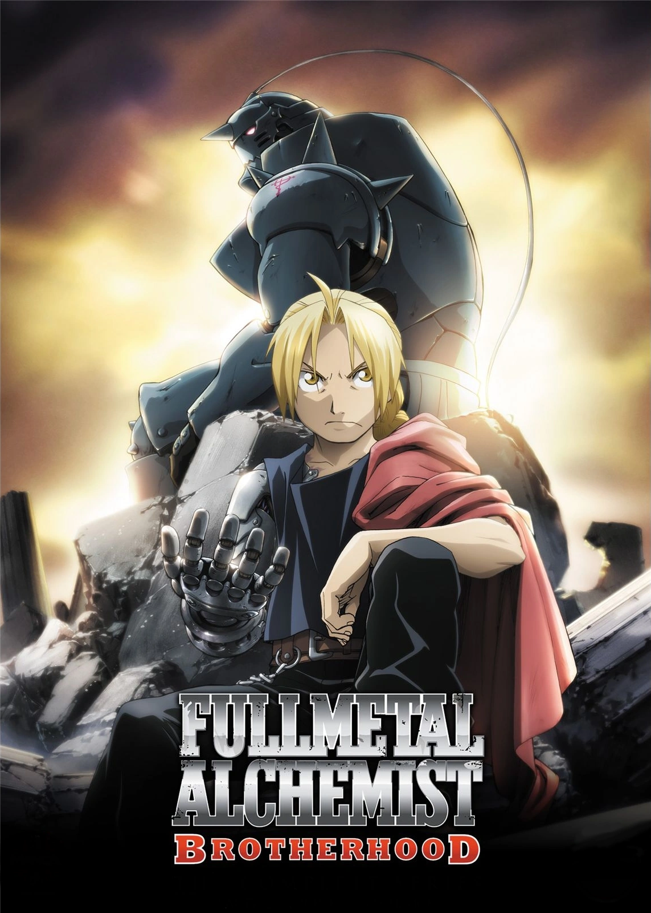
Puntuación: 9.10
Episodios: 64
Estado: Finalizado
Ver ficha completa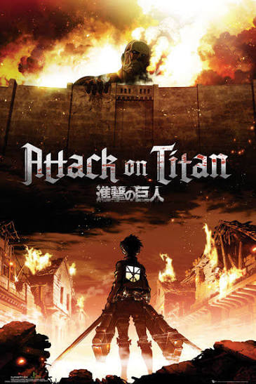
Puntuación: 8.55
Episodios: 25
Estado: Finalizado
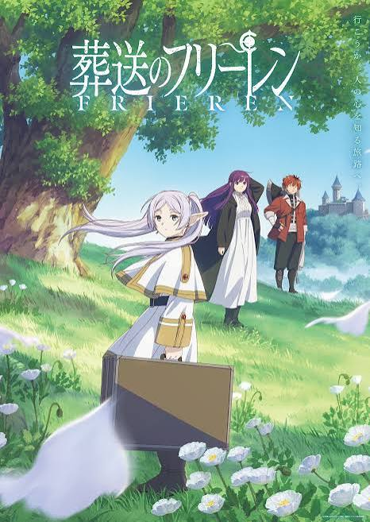
Puntuación: 9.33
Episodios: 28
Estado: Finalizado
Ver ficha completa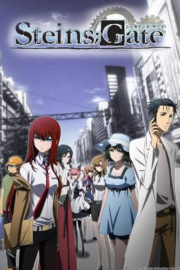
Puntuación: 9.07
Episodios: 24
Estado: Finalizado
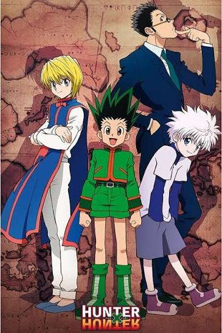
Puntuación: 9.04
Episodios: 148
Estado: Finalizado
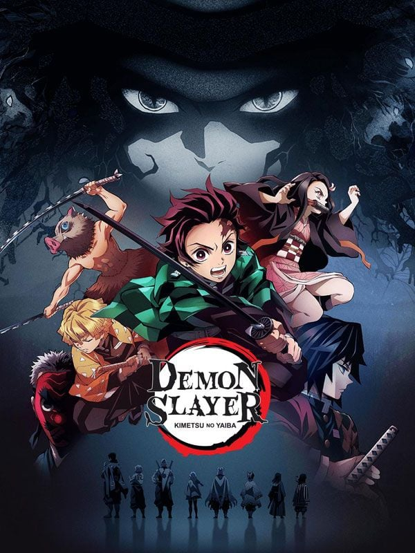
Puntuación: 8.48
Episodios: 26
Estado: Finalizado
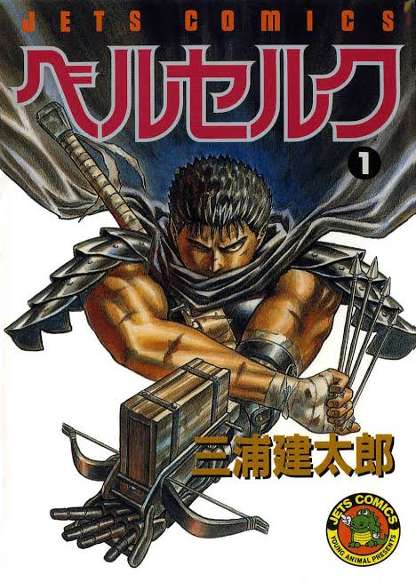
Puntuación: 9.47
Capítulos: 380+
Estado: En publicación
Ver ficha completa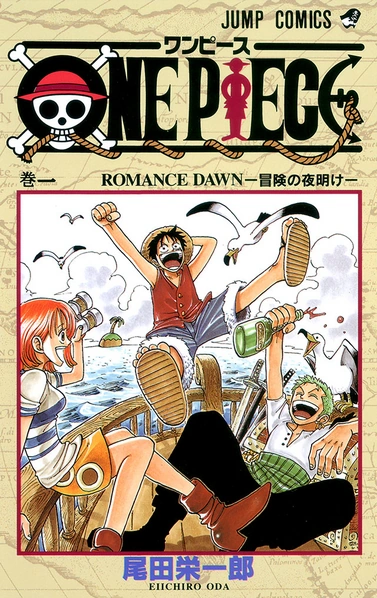
Puntuación: 9.22
Capítulos: 1100+
Estado: En publicación
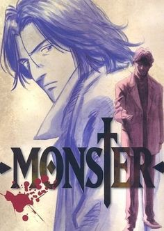
Puntuación: 9.15
Capítulos: 162
Estado: Finalizado
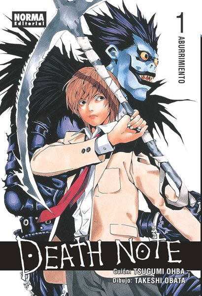
Puntuación: 8.70
Capítulos: 108
Estado: Finalizado
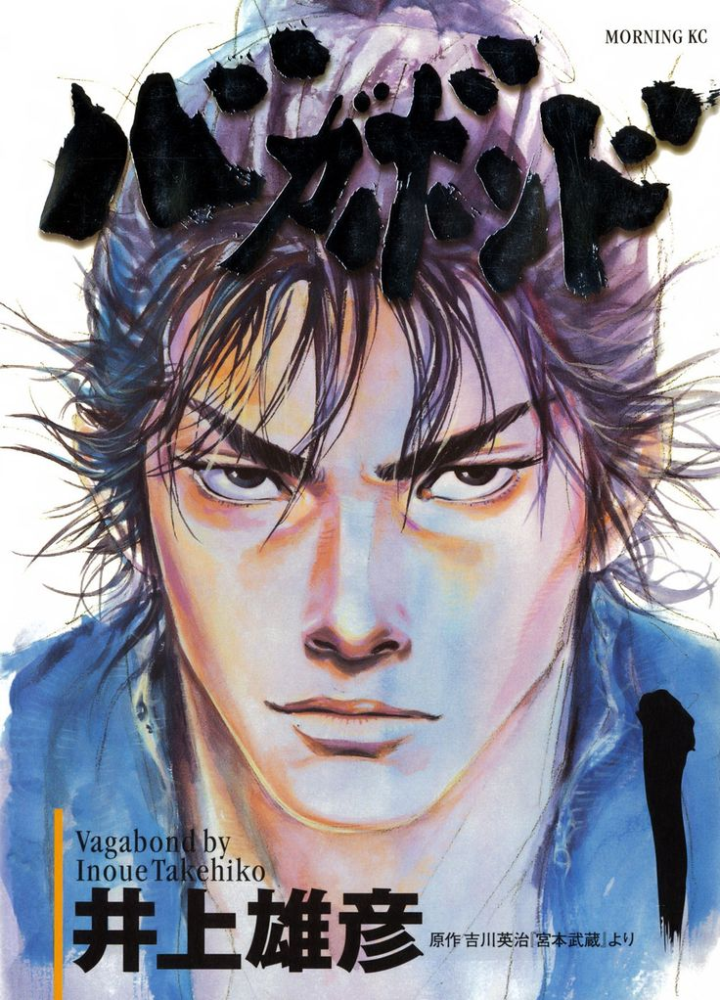
Puntuación: 9.25
Capítulos: 327
Estado: Pausado
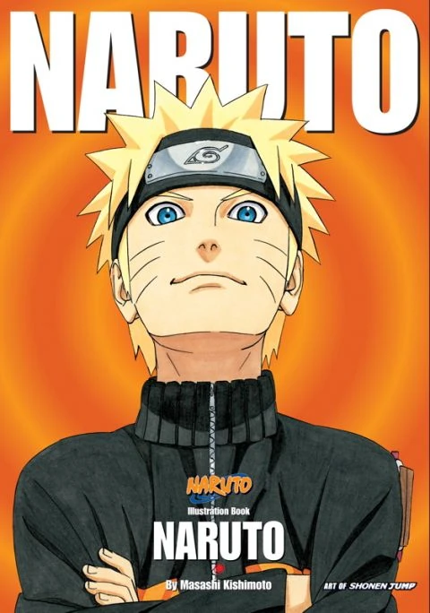
Puntuación: 7.93
Capítulos: 700
Estado: Finalizado